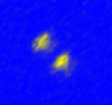
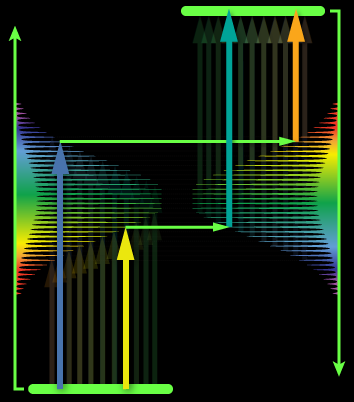
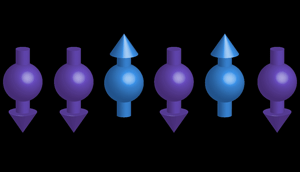
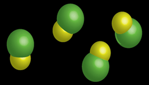

Research
Trapped Ion Gyroscope
Imagine you have been tasked with proving to a skeptic that sun does not orbit the Earth, but rather that the Earth is spinning about its axis. No amount of referencing books or papers will convince this person -- they must see it with their own eyes. How can it be done?
Well, if the Earth is spinning, we are spinning along with it and there sould be some effects of this motion. And indeed there are, but none seem to be quite as compelling as the precession of a Foucault pandulum. A pendulum, carefully set into motion at any lattitude other than the equator, will gradually change its plane of rotation as viewed by an observer rotating with the spinning Earth. Such a device is known as a gyroscope -- a sensor for rotation.
Consider an arrow that always points the same direction in space (say, always toward the same star that is infinitely far away). If we carry it around in a box and then open the box and the arrow seems to point in a different direction, it is the box that has rotated, not the arrow. From this the orientation of the box can be determined, which is a useful navigational tool in situations where GPS is not available.
Along with Paul Hamilton's group, we are creating a gyroscope based on a trapped ion. The rules of quantum mechanics that permit objects to be in two places at once also allow us to make a quantum Foucault pendulum, where the ion orbits the trap center clockwise and counterclockwise at the same time. Matter-wave interference then allows read-out of the orientation of this gyroscope compared to the lab.
If the lab has rotated (hint: it most certainly has!), this effect will be visible in the interference patter. We are working toward demonstrating this first inertial sensor built from a trapped ion and exploring its usefulness for practical applications. The hope is that robust, intertial navigation will be possible in GPS denied environments such as underwater, in space, or in the event of a failure of the GPS satellite constellation.
Quantum Computing with Synthetic Atomic Qubits
Trapped ions offer a premiere platform for testing and manipulating isolated quantum systems. Atomic clocks, quantum sensors, and matter-wave interferometry all require exquisite isolation from the decohering effect of their environment. It is by isolating these systems that we finally see nature as it behaves according to the rules of quantum mechanics. It's not that quantum mechanics breaks down for the size and temperature scale of the "everyday world" we know, but rather that the effects of quantum interference become hidden in the noisy thermal average of the commony experienced universe at human scales.
A particularly vexing problem associated with trapped ion quantum systems (known as "qubits") is that the "easy to use" qubits aren't, well, easy to use. The atomic structure that gives rise to the easiest high-quality qubit comes with the need for difficult laser technology in the ultraviolet. However, this is only really true if we confine ourselves to the species that are found in natural abundance. If we widen the scope to include human-produced isotopes, the 133Ba+ ion emerges as the atom that has it all -- an easy to use, robust qubit and optical transitions in the visible part of the spectrum.
In collaboration with Eric Hudson's group, we have developed methods to produce 133Ba+ in our trap and have performed preliminary spectroscopy of its internal structure. The image here shows two 133Ba+ ions in the trap ("Dave" is the ion in the upper left, "Justin" is on the lower right), where by exchanging phonons of their collective modes of motion, the hyperfine qubits defined on each atom may be used to perform computations with quantum speed enhancements.
Laser Cooling with Optical Frequency Combs
The optical cavity that surrounds the gain medium of a laser oscillator is typically capable of supporting a large number of longitudinal modes that are equally spaced in frequency. Since most gain media support optical amplification over a wider frequency range than the spacing between these modes (given by the free-spectral range of the cavity), a laser of this sort (a mode-locked laser) is perfectly happy to lase in multiple modes at the same time.
Add in a little bit of nonlinearily to such a laser, and all of the available modes can lock together in phase. For one, brief, shining moment, the electric field of every participating mode can add constructively and the laser emits a pulse of light. This process then repeats itself at incredibly regular intervals of time, and the resulting spectrum is known as an optical frequency comb.
While it has been recognized for some time that optical frequency combs are useful measurement devices, they can also be used to control the motion of atoms and molecules in ways that are not possible (or practical) with continuous-wave (cw) lasers. For instance, work in our group has shown that laser cooling and trapping can be accomplished with optical frequency combs in a way that is specifically designed to work for species that can't currently be laser cooled.
That list contains atoms like hydrogen, carbon, oxygen, and nitrogen -- the very building blocks of modern chemistry. Our next step is to push this technique into the deep ultraviolet and to cool and trap these species for precision spectroscopy and ultracold chemistry.
Another, related way that optical frequency combs can prove usful is in the laser cooling of atomic ions. We are currently working toward eliminating the need for costly and difficult cw lasers for these species, which currently pose a fairly significant hurdle to working with them. For trapped ions, the trap is sufficiently tight that only one beam is typically needed to cool in 3D due to the fact that the ion will oscillate back and forth. However, this introduces some special complications to how the atom "sees" the optical frequency comb, which is a topic we are currently studying. We are also working on ways to produce state-selective excitation of the hyperfine qubit in 171Yb+ using broadband pulses, which will allow temporally-sensitive detection of fluorescence.
Quantum Simulations with Trapped Ions
Our knowledge of the behavior of quantum many-body systems is currently limited to those that happen to be theoretically or numerically tractable and those that can be studied in detail experimentally. The world, however, exhibits many systems that are too complex for a complete theoretical description, but too large for an efficient numerical simulation on a classical computer or microscopic experimental probing. Such poorly-understood systems include exotic forms of matter such as spin-liquids and some high-temperature superconductors. We would like to understand the behavior of quantum many-body systems better in order to help us to design useful new materials, understand observed but unexplained behavior, and investigate the borderline between quantum mechanical and thermodynamic behavior.
Recently, a new approach called quantum simulation has begun to be applied that is in many ways an ideal intermediate between in situ experiment and numerical simulation. In quantum simulation, we can use a well-controlled, isolated, laboratory quantum system to model the quantum many-body phenomenon of interest. The quantum simulator, then, utilizes the enormous, classically intractable Hilbert space we allow it to fill and, for instance, either does or does not exhibit the superconductivity we were not sure was associated with the Hamiltonian imposed on the simulator. We are using trapped atomic ions as a platform for quantum simulations of a class of many-body quantum systems called lattice spin models. Each ion simulates the quantum-mechanical spin-1/2 degree of freedom of an electron, and by using appropriately tuned laser fields, we can cause these simulated spins to interact in a manner that is governed by the rules we impose on the system. By looking at the resulting spectra, dynamics, phase transitions, and states, we hope to learn about systems that have to this point been inaccessible to us.
Cold Polar Molecules
The ability to laser cool gas-phase samples of a small subset of elements found in the periodic table has established ultracold atoms as premier systems for precision measurement and control. Select species have been cooled to quantum degeneracy and are finding use as elements in quantum information processors, quantum simulators, and optical atomic clocks. These atoms, however, are extremely symmetric and simple objects when compared to molecules. Even a simple diatomic molecule made from two different elements offers a vast array of new control possibilities if we can produce samples that are as cold and dense as is routinely achieved for atomic samples. It turns out that this is a much more demanding task than it was for atoms, due essentially to the addition of the vibrational degree of freedom that molecules possess.
We are pursuing ways to produce cold samples of polar molecules in the lab. Our focus is on simplicity of both concept and apparatus, and we use a host of different tools to help us, including parts of the electromagnetic spectrum ranging from UV lasers to microwaves to quasi-DC electric fields. As with most atomic physics labs, we also utilize lasers for many tasks, including Q-switched, mode-locked, and continuous-wave lasers. Our plan is to use these tools to decelerate, cool, and trap dense samples of cold molecules for quantum simulation and cold, controlled chemistry./p>